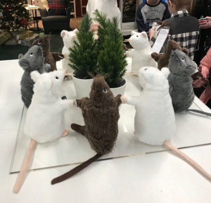

Крысы готовят что-то неладное
15.08.2020
В ночь с субботы на пятницу Верховный шаман крыс Анатолий Дмитриевич вместе со своими последователями провел обряд нацеленный против котов и кошек. Обряд был проведен в популярном магазине мебели "Икея". Ждем ответной реакции от общества котов и кошек.
